Opgericht in 2020, WZ Analytics brengt jaren ervaring in de professionele voetbal industrie met zich mee, met gespecialiseerde kennis van wedstrijd & speler analyse en wedden. Ons doel is om scouting en speler recruitment te verbeteren door gebruik van geautomatiseerde analytische technieken.
Joshua is de directeur en oprichter van WZ Analytics. Hij heeft een BSc in Economie en een MSc in Sport Management, en is afgestudeerd aan het top van zijn jaar.
Hij heeft in een professionele clubomgeving in Engeland gewerkt, data-gestuurde oplossingen gecreëerd voor voetbalbemiddelaars en heeft analytische ervaring uit zijn tijd in de voetbalweddenschappenindustrie.
Joshua was de belangrijkste ontwikkelaar van ons algoritme dat centraal staat in ons bedrijf.